X0X
X0X turns the M-VAVE FM-1 into a groovebox: a 909, an 808, two 303s and a breakbeat player, all playing at once, in stereo. Each part can play its own pattern, you can arrange patterns into a song, and you can record knob moves.
X0X is in beta. It's solid for everyday playing, but a very busy pattern can push the FM-1 to its limit. When that happens, X0X gives up a little sound quality to keep playing rather than drop out (see Performance in section 15).
1Install
You can try X0X before installing it: https://charlesvestal.github.io/fm1-x0x/emu/ runs the same code in the browser, with sound, played with the mouse, a touch screen or the keyboard. You can load your own breaks into it too, as you would upload them to the FM-1.
The easiest way to install X0X is the web installer at https://charlesvestal.github.io/fm1-x0x/install/. It works in Chrome or Edge on a computer, and you don't need to install anything else. Connect the FM-1 to the computer with a USB data cable, open the page and press Install. Don't unplug the cable while it's writing. When it finishes, the FM-1 restarts into X0X.
You can also install from the command line. Download the firmware file (for example x0x-0.10-beta.fwsc) from the releases page, get the X0X source code from GitHub, install Python 3 with the mido and python-rtmidi packages (pip3 install mido python-rtmidi), and run:
python3 tools/fm1_install.py x0x-0.10-beta.fwsc(The web installer on hugelton.github.io installs Felucca, not X0X.)
To go back to the original firmware, use "Back to the stock firmware" at the bottom of the web installer: download M-VAVE's FM-1 V15 file from the link there, choose it, and press the button. (M-VAVE's own updater, M-UPGRADE, works too.) If the FM-1 no longer starts, see Recovering an FM-1 that won't start. Installing third-party firmware is at your own risk.
2Getting started
Here's a five-minute tour, from switching on to saving your first beat. When X0X starts, the screen shows the 909, and every part is empty.
- Add a kick. Press black key 1 to pick the bass drum (you'll hear it), then press white keys 1, 5, 9 and 13.
- Press PLAY. The kick plays on every beat.
- Add a clap. Press black key 7, then white keys 5 and 13. While the pattern is playing, picking a drum is silent, so you won't add a stray hit.
- Add open hats. Press black key 9, then white keys 3, 7, 11 and 15.
- Write a 303 line. Turn ALGORITHM two clicks clockwise to 303A, press ARP, then press OCT+. Each press writes a new line; keep pressing until you like one.
- Shape the 303. Press ARP again to leave TB-3PO; the knobs are the 303's TONE page. Turn KNOB 1 to open or close the filter, and KNOB 2 to change the resonance.
- Add the break. Turn ALGORITHM two more clicks to BREAK, then press all 16 white keys so the break plays the whole bar.
- Mute a part. Press HOME, then black key 5 to mute the break. Press it again to bring it back.
- Record a filter sweep. Turn ALGORITHM back to 303A and press EDIT. Press REC, slowly turn KNOB 1 for a bar or two, then press REC again. The sweep now plays every time the pattern comes round.
- Save. Press SAVE, and everything is kept when you switch off. (X0X also saves by itself a few seconds after you stop playing; see section 15.)
From here, section 9 shows how to make more patterns and switch between them, and section 12 how to arrange them into a song.
3Controls
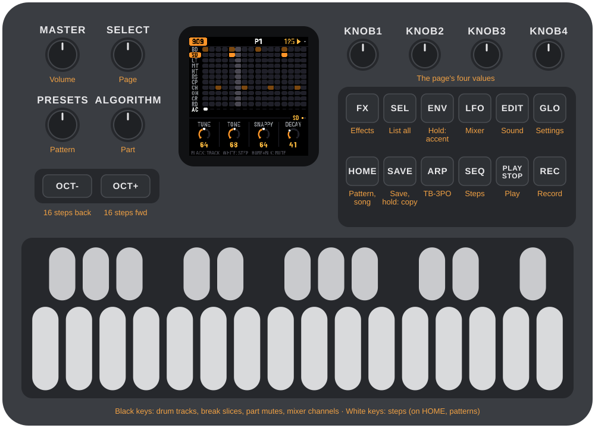
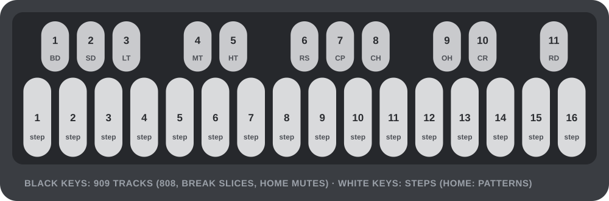
These controls do the same thing on every screen. Each button that opens a screen always opens the same one: HOME the pattern (again: the song), SEQ the part's steps, EDIT the part's sound, ARP TB-3PO, LFO the mixer, FX the effects, GLO the settings. Pressing it again steps through that screen's pages. ALGORITHM only picks the part.
| Control | What it does |
|---|---|
| ALGORITHM | Chooses the part you're working on: 909, 808, 303A, 303B or BREAK. |
| PRESETS | Chooses the next pattern. On a part's screen it changes only that part; on HOME it changes all five. |
| SELECT | Moves to the next or previous page. In a list, it moves up and down. Hold HOME and turn SELECT to set the tempo. |
| KNOB 1–4 | Change the four values shown at the bottom of the screen. Turn slowly for single steps, quickly to sweep: a fast half turn covers the whole range. |
| SEL | Shows everything on the current screen as a list. In a list, it runs the highlighted action. When X0X asks a question, SEL means yes. |
| HOME | The pattern: all five parts. Press it again for the song, and again to come back. In a list, it goes back; when X0X asks a question, HOME means no. |
| SEQ | The selected part's steps, with its LENGTH, RATE and (on a 303) DIRECTION and TRANSPOSE (SWING is on HOME: it's every part's). Press it again for the next page. |
| EDIT | The selected part's sound, with its steps still on the keys. Press it again for the next page. |
| ARP | TB-3PO, the 303 line generator (on a 303 only). Press it again for the next page. |
| FX | Opens the effects. |
| LFO | Opens the mixer and the master. |
| GLO | Opens the settings. |
| PLAY | Starts and stops. Hold HOME and press PLAY to redo. |
| REC | Turns recording on and off: what you play is written (drum hits, 303 notes, knob moves; in SONG mode, the song). On a 303, the keys become a keyboard while it's on. Hold HOME and press REC to undo. |
| SAVE | Saves everything. |
The key lights have two levels: bright for what is on or chosen, dim for what is there to choose.
| Screen | Bright | Dim |
|---|---|---|
| HOME | the pattern playing (a cued one blinks); the parts playing | patterns with notes; muted parts |
| SONG | the bar's pattern; the bar's parts | patterns with notes; the bar's muted parts |
| 909 / 808 | the track's hits; the track | the other tracks with hits |
| 303 | notes | ties |
| 303 with REC on | the keys you hold | the Cs, to find your place |
| BREAK | the steps it plays | the slice pads 1–8 |
| MIX (PARTS, 909 MIX, 808 MIX) | the channel the knobs set | the other channels |
| ENV, LFO | Hold one of these while pressing keys to add an accent (ENV) or a slide (LFO). (LFO on its own opens the mixer.) | |
| OCT-, OCT+ | Page through the steps, 16 at a time (1–16, 17–32, 33–48, 49–64). On HOME and SONG they show patterns 1–16 or 17–32. On the 303 keyboard they change the octave. In TB-3PO they mutate the line or write a new one. | |
| White keys | Steps. On HOME, they choose patterns. | |
| Black keys | Drum tracks, or the break's slices. On HOME, they mute parts. Hold HOME and press one on the 909 or 808 to mute just that track. | |
| MASTER | Volume. |
(The SEL button is labelled SCL in Felucca.)
In a list, turn ALGORITHM to change the highlighted value. Rows with a return arrow are actions: press SEL to run them. X0X always asks before doing anything that would lose notes.
Help on the FM-1: hold any button for a second on its own, and a card shows what it does on the screen you're on, including its combinations (HOME's card, for example, covers tempo, patterns, undo and redo). Let go and nothing happens. The card disappears as soon as you press anything else, so button combinations work as normal.
Undo: hold HOME and press REC to take back your last change. The screen tells you what it undid, for example UNDO 909 P1. Hold HOME and press PLAY to redo it. You can go back up to 32 steps (fewer after very big changes). A step is whatever you did before pausing for a moment: a few steps tapped in a row, one turn of a knob, or a whole recording pass. Undo covers the sounds, patterns, song and knob motion, even CLEAR PATTERN and FACTORY RESET. It doesn't cover the tempo or the settings, and the history is cleared when you switch off.
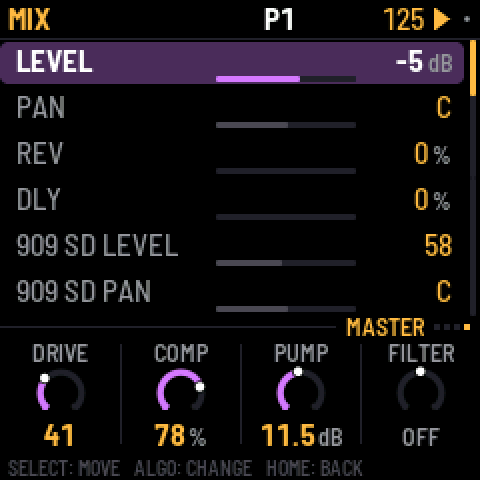
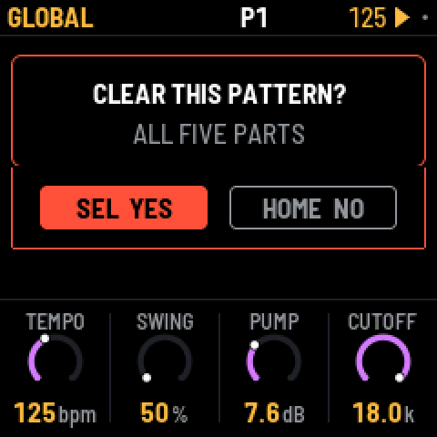
4The screen
The top line shows, from left to right:
- the part, in its colour: 909 orange, 808 red, 303A green, 303B blue, BREAK violet;
- the pattern playing, such as P3. If you've chosen a different pattern to play next, it appears after it: P3 >5 means pattern 5 is coming up. On a part longer than 16 steps, the 16 steps the white keys show come after it (33-48);
- the tempo, which turns amber when X0X follows an external MIDI clock;
- a play symbol while playing, and a red dot while recording. A small grey dot means you have changes that aren't saved.
When you press a button that does something, the top line says what happened for about a second, for example SAVED or COPIED TO P5.
At the very bottom, a footer line says what the keys do on this screen (for example BLACK: TRACK, WHITE: STEP). Until you first press a button it says HOLD ANY BUTTON: WHAT IT DOES: any button held for a second shows a card about it.
Above the footer are the four knobs, under a tag that says whose they are: the selected track (BD), the whole machine (909 KIT), a 303's sound (303A TONE), the generator (P3 GENERATE), a part on the mixer (PARTS: 303A), a track on the mixer (909 MIX: CP), or a held 303 step (303A STEP 5). When a section has more than one page, the tag counts them (BD (1/2)); the dots at the end of its line are all the screen's pages, the current one lit. Settings with only a few choices show a row of small squares instead of a ring. When you turn a knob, its value is also shown in large type for a second, with whose it is: the track's (BD TUNE), or the pattern's (P3 909 LEN).
Each button has one job. The part screens (ALGORITHM, EDIT) are the sound; HOME is the pattern (which one plays, and each part's length, rate and swing); LFO is the mix and the master; FX the reverb and delay. A pattern's settings change when the pattern changes and are copied with it; the sound stays the same whatever pattern plays.
The pages hold the knobs you turn most. SEL shows the whole screen as a list, in sections: on the 909, for example, BD: THIS TRACK, 909: ALL TRACKS, and MORE, the settings no page has (here the track's DRIVE and DIST).
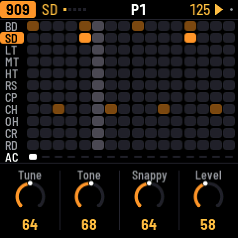
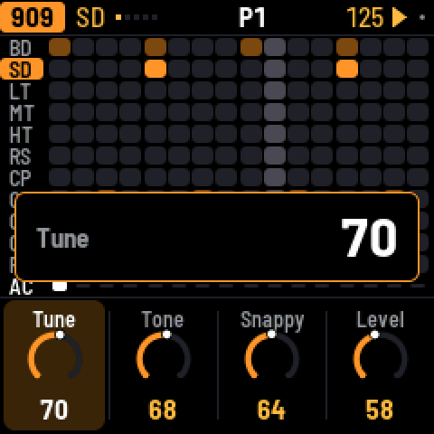
5909 and 808
Each drum machine has eleven tracks, one on each black key:
| Key | 909 | 808 |
|---|---|---|
| 1 | Bass drum (BD) | Bass drum (BD) |
| 2 | Snare (SD) | Snare (SD) |
| 3–5 | Low, mid and high tom | Low, mid and high tom, or congas |
| 6 | Rim shot (RS) | Rim shot, or claves |
| 7 | Clap (CP) | Clap, or maracas |
| 8 | Closed hat (CH) | Cowbell (CB) |
| 9 | Open hat (OH) | Cymbal (CY) |
| 10 | Crash (CR) | Open hat (OH) |
| 11 | Ride (RD) | Closed hat (CH) |
On the 808, the SOUND setting of a track switches it between tom and conga, rim and claves, or clap and maracas. The 909's hats and cymbals are samples, as on the original machine. Every other sound on both machines is synthesized.
Press a black key to pick its track. When the pattern is stopped you also hear it. While it plays, picking a track is silent, so you don't add a hit to the groove (set GLO > KEY SOUND to ALWAYS if you'd rather hear it every time). Then press white keys to turn the track on or off at those steps. To place accents instead, hold ENV while you press white keys. An accent makes every drum on that step louder.
A pattern can be up to 64 steps long. The white keys show 16 steps at a time: OCT+ moves to the next 16 and OCT- back, and the top line shows which 16 you're on.
Muting a track: hold HOME and press a black key to mute that track, and again to bring it back. A muted track's row turns grey. Track mutes aren't saved, and they stay as they are when you mute or unmute the whole part on HOME.
The closed hat cuts off the open hat. On the 808 you can change this with CHOKE on the KIT page.
Press EDIT to step through the pages: the selected track's sound (one page, two for the 909's kick), then KIT, for the whole machine: ACCENT, how much louder accented steps are, and on the 808 CHOKE. Each track's DRIVE and DIST are in SEL's list, under MORE.
A drum machine's LENGTH and RATE are on SEQ. SWING is on HOME: it swings every part. Each track's level, pan and reverb and delay sends are on the mixer: press LFO and go to the 909 MIX or 808 MIX page, which shows all eleven tracks' levels at once. The black keys pick a track there, and the knobs are its LEVEL, PAN, REV and DLY. On the 808 the alternate sounds share their track's pan, so the conga sits where the tom does.
6303A and 303B
There are two identical 303s. Each has its own sound and its own line.
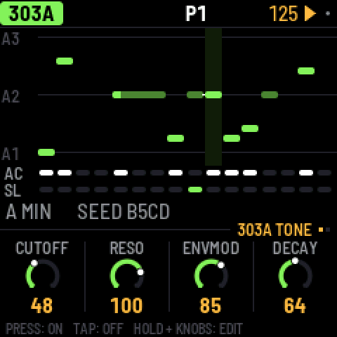
Steps. Press a white key to turn that step on; tap it again to turn it off. To edit a step, hold its key and turn the knobs: KNOB 1 sets the note, KNOB 2 the gate (REST, NOTE or TIE), KNOB 3 the accent and KNOB 4 the slide. An empty step turns on as soon as you press it, so you can press and hold it and set its note in one go. A slide glides from this step's note into the next one.
A tie holds the note before it through the step, so the note doesn't play again. On the screen a tied note joins the note it holds in one long bar. Turning KNOB 1 on a tie makes it a note of its own.
Keyboard. Press REC and all 27 keys become a keyboard (KEYS appears on the top line): the notes you play are written, step by step while the pattern is stopped, live while it plays. OCT- and OCT+ change the octave. If you play a key while still holding another, the 303 slides between them. Press REC again to go back to steps.
Press EDIT to step through these pages:
- TONE: CUTOFF, RESO, ENVMOD and DECAY.
- VOICE: ACCENT, WAVE (saw or square), DRIVE and SLIDE time.
TUNE, VOLUME, DRIVE TYPE (off, soft or RAT) and ACCENT DECAY are in SEL's list. The line's LENGTH (1–64 steps), RATE, DIRECTION (forward, reverse, ping-pong or random) and TRANSPOSE are on SEQ. Each 303's level, pan and sends are on the mixer (LFO).
7TB-3PO
TB-3PO writes 303 lines for you. Select a 303 and press ARP; press ARP again to go back.
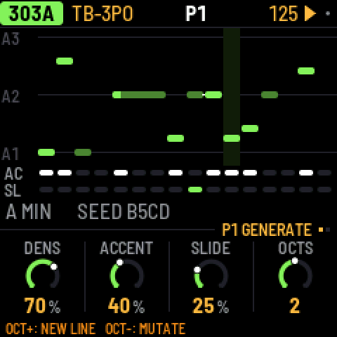
Press OCT+ to write a completely new line. Press OCT- to mutate the current line, which changes about a quarter of its steps.
TB-3PO has two pages (SELECT moves between them):
- GENERATE: DENS, ACCENT and SLIDE set how many steps play, are accented and slide. OCTS sets the range, from 1 to 3 octaves.
- SCALE: ROOT, SCALE (minor, Phrygian, harmonic minor, minor pentatonic, Dorian or major), OCTAVE, and MUTATE, which mutates the line by itself every 1–16 bars (or never).
Turning the GENERATE and SCALE knobs doesn't change the line you're hearing. They set up the next OCT+ (new line) or OCT- (mutate), so your line stays exactly as it is, hand edits included, until you press one of them. When the knobs no longer match the line, the screen shows NEW LINE with a star. The same settings and seed always give the same line, the same one Schwung's TB-3PO module would write.
8Break
The break is a drum loop cut into eight slices, which X0X rearranges as it plays.
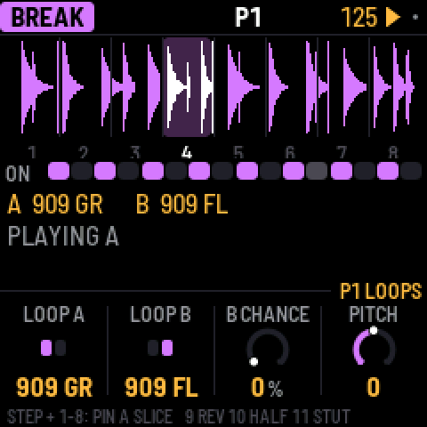
The white keys turn the break on or off for each of the bar's 16 steps. To play slices yourself, hold black keys 1–8; when you let go, the generator takes over again. Hold key 9 to play backwards, key 10 to play at half speed, and key 11 to stutter.
A step's own slice: hold a white key and press black key 1–8. That step now always plays that slice of loop A, from its start, whatever the generator would have chosen, and its box shows the slice's number. Press the same black key again (holding the step) to give the step back to the generator. This way you can fix the kick and snare where you want them and let the generator play with the rest. A step's slice is saved with the pattern.
SEQ has its two sequence pages, GROOVE (COMPLEXITY, ANCHOR, ROLL, FILL) and RETRIG (2X, 3X, 4X, 8X), with PHRASE, A LENGTH and B LENGTH in SEL's list. EDIT has LOOPS (LOOP A, LOOP B, B CHANCE, PITCH), with LEVEL in SEL's list. These settings control how the generator rearranges the loop:
- COMPLEXITY: how often it jumps to a different slice instead of playing the next one.
- ANCHOR: how strongly it keeps the kick and snare slices on beats 1 and 3.
- ROLL: how often it repeats a slice or moves to the slice next to it.
- FILL: how much the last bar of a phrase breaks these rules.
- RETRIG 2X, 3X, 4X and 8X: the chance, in each bar, of stuttering a beat.
- PHRASE: the length of a phrase, 2, 4, 8 or 16 bars, or off.
- B CHANCE: the chance of switching to loop B in the last bar of a phrase. With PHRASE off, the chance applies to every bar: at 50%, about half the bars play loop B.
- A LENGTH and B LENGTH: how often a new slice is chosen, from every 1/4 bar to every 8 bars.
These settings, and the loops, are saved with the pattern. The break's level, pan and sends in the mix are on the mixer's PARTS page (LFO, black key 5). X0X comes with two loops of its own, 909 GR and 909 FL, played by its 909. Loops you upload appear after them. Loops are stretched to fit the tempo.
Your own breaks
X0X doesn't come with any recorded breaks, but you can load your own. The FM-1 has three sample slots of about 7 seconds each. A one-bar loop takes about a third of a slot, so about nine loops fit in total.
The easiest way is the break loops page on the X0X website (charlesvestal.github.io/fm1-x0x/breaks), in Chrome or Edge. Connect the FM-1 with X0X running, drop your audio files on the page (WAV, AIFF, MP3 and the other formats the browser can read), and press Upload. The page shows which slot and name each loop will get and how full the slots are, before anything is sent.
From the command line, with the FM-1 connected, run:
python3 tools/upload_breaks.py --bars amen.wav think.wav funky.wav ...The --bars option takes one bar from each file; without it, each file is uploaded whole. The loops are named BR1.1, BR1.2 and so on, up to BR2.1 and beyond, and they appear after X0X's own loops. Uploading to a slot replaces whatever was in it.
To check what will fit without connecting the FM-1, add --dry-run FOLDER. If you have schwung-breakbeat next to X0X, --bbgen uploads BB Gen's classic breaks.
To build loops into the firmware itself instead, see BUILDING.md.
9Patterns
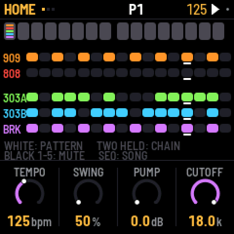
There are 32 patterns. Each part plays its own pattern, so the 303s can play pattern 3 while the drums play pattern 7. A pattern holds each part's steps, length and rate, the break's settings, the swing and any knob motion. Sounds, effects and master settings are not part of a pattern and don't change when the pattern does.
On HOME, the white keys and the boxes are patterns 1–16; press OCT+ for patterns 17–32 (P17-32 shows under the boxes) and OCT- to go back. A box is lit when the pattern has notes, and it shows a coloured bar for every part that is playing it: a bright bar if that part has notes in the pattern, a dim one if the part is playing it empty.
To choose patterns:
- One part: go to that part's screen and turn PRESETS.
- All five parts: turn PRESETS on HOME, or press a white key on HOME.
- A chain: on HOME, hold two white keys at once. All five parts then play each pattern from the first to the second, one bar each, and start again. Choosing a single pattern ends the chain.
If the music is playing, the new pattern starts when the current bar ends. If it's stopped, the new pattern takes over straight away.
When a part changes pattern, it starts again from step 1. The other parts carry on where they were.
To manage patterns:
- Finding a pattern: on HOME, every fourth box is numbered (1, 5, 9, 13; 17 … 29 in amber).
- Copy: hold SAVE and press a white key to copy to that pattern. On a part's screen this copies only that part. On HOME it copies all five parts as they're playing now. Holding SAVE for a moment shows a card that says exactly what will be copied (for example COPY 303A P1), and the top line confirms it afterwards (303A P1 COPIED TO P2). The white keys stand for the patterns HOME last showed, 1–16 or 17–32; while holding SAVE, OCT- and OCT+ switch between them.
- Clear one part: hold SAVE and press REC. To clear all five parts, use GLO > CLEAR PATTERN.
- Mute a part: on HOME, press black keys 1–5. Mutes aren't saved, except inside a song.
Parts can have different lengths, so they drift against each other. The 909's length sets the length of a bar, and the 909's pattern sets the swing. Swing delays every second 16th note: 50% is straight, and 75% is the most swing.
HOME's knobs are for playing live: TEMPO, SWING, and the master's FILTER and PUMP. Each part's length and rate are on its SEQ screen (the break is always 16 steps).
10Recording
Press REC to turn recording on, and press it again to turn it off.
- Drums: while the pattern plays, press black keys to record hits (with REC on, you always hear them). Hold ENV to record accented hits.
- 303, live: with REC on, the 303's keys are a keyboard: play while the pattern runs.
- 303, one step at a time: with REC on and the pattern stopped, each key you press fills the next step, starting from step 1. Hold ENV while pressing a key for an accent, or LFO for a slide. To enter a rest, hold ENV and press OCT- or OCT+; for a tie, hold LFO and press OCT- or OCT+.
- Knob moves: with REC on and the pattern playing, turn any sound knob (see Knob motion).
11Knob motion
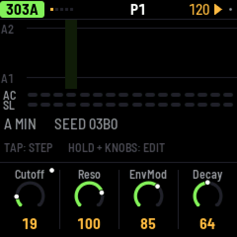
You can record knob moves into a pattern. Turn on REC, press PLAY, and turn any sound knob. X0X records the knob on the steps where you moved it. Short pauses are filled in, so a slow sweep has no gaps. On playback, the value glides smoothly from step to step rather than jumping.
A knob with recorded motion has a dot in its corner, and its ring follows the recorded value while it plays.
- On steps where you didn't move the knob, the knob's own setting plays.
- If you turn the knob while not recording, your turn takes over for one pass of the pattern, and then the recording plays again.
- To clear a knob's motion, hold SAVE and turn the knob.
- Motion belongs to a part's pattern: the 303's knobs record into the 303's pattern, and the effects and master record into the 909's. Copying or clearing a pattern copies or clears its motion too.
- When you stop, every knob goes back to its own setting.
There is room for 160 recorded knobs across all the patterns. When there's no room left, the top line says MOTION FULL.
12Song
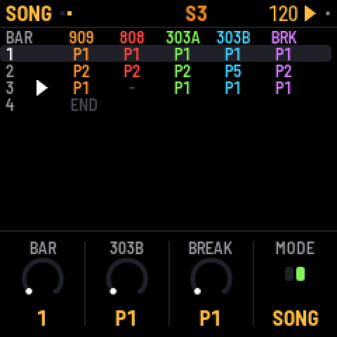
A song is a list of up to 192 bars. Each bar says which pattern each part plays and which parts are muted. To open the song, press HOME twice (HOME again comes back to the pattern).
- Write bars: press a white key. The selected bar gets that pattern for all five parts, and the next bar is selected. Pressing keys at the end of the song adds new bars.
- Edit a bar: turn KNOB 1 to select the bar, then use the other knobs to set each part's pattern for that bar.
- Mute parts in a bar: press black keys 1–5.
- Play the song: set MODE to SONG, either on the second page of the SONG screen or in GLO, then press PLAY. The song starts at the selected bar and loops. While it plays, the top line shows S and the current bar number.
- Record the song: in SONG mode, turn on REC and press PLAY. As it plays, change patterns and mute parts however you like. Each bar is written into the song as it goes by, starting from the bar you started on, and the song grows if you play past its end. Recording replaces what was in those bars before.
Press SEL on the SONG screen for LENGTH, INSERT BAR, DELETE BAR and CLEAR SONG.
13Effects
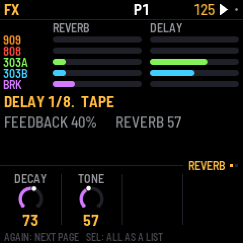
There is one reverb and one delay, and every part can send to both: each part's sends are on the mixer's PARTS page (LFO), each drum track's on 909 MIX and 808 MIX. FX shows how much every part sends, and has two pages:
- REVERB: DECAY and TONE. The reverb is stereo: whatever you send it comes back wide.
- DELAY: TIME (in note values from 1/32 to a dotted half note), FEEDBACK, TONE and TAPE. TAPE at the far left (DIGI) is a clean 12-bit digital delay; turned up, it is a tape delay that wobbles, saturates and wears more the further you turn it, and can feed back on itself at high feedback.
In SEL's list, under MORE: each effect's low cut and return level, and PING-PONG, which bounces the echoes between left and right.
14Mix and master
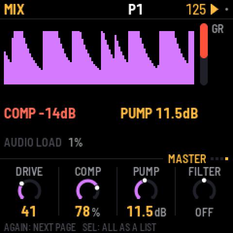
Press LFO to open MIX. It shows a level and a meter for each part, and the compressor's gain reduction in red. It has four pages:
- PARTS: press black keys 1-5 to pick the 909, 808, 303A, 303B or the break; the knobs are its LEVEL, PAN, REV and DLY. As you turn a pan, the part stays at full level on that side and fades out of the other.
- 909 MIX and 808 MIX: each drum machine's own mixer, every track's level at a glance; the black keys pick a track, and the knobs set its LEVEL, PAN, REV and DLY.
- MASTER: four knobs over the whole mix.
On PARTS, 909 MIX and 808 MIX, hold HOME and press a black key to mute or unmute that channel (a part on PARTS, a track on the drum pages). The key lights show it: the channel the knobs set is bright (blinking while muted), the others dim, muted ones dark.
On MIX, turning ALGORITHM goes to the part's own page: MIX: 909 or MIX: 808 for the drum machines, PARTS (with that part picked) for the 303s and the break.
| MASTER | What it does |
|---|---|
| DRIVE | Saturates the whole mix (the 909's drive stage). |
| COMP | One knob for the compressor: 0 is off; turning up lowers its threshold, raises its ratio and adds makeup gain together. Three quarters is the factory's hard squeeze (4:1 from -24 dB, +16 dB). |
| PUMP | Lowers the whole mix each time the kick plays, by up to 24 dB, and lets it swell back up: the big-beat breathing. Accented kicks pump harder. It works even with COMP at 0, and even when the kick is muted. |
| FILTER | One knob: in the middle it's off; to the left a low-pass closes down, to the right a high-pass opens up. |
FILTER and PUMP are also on HOME's PERFORM page, for playing live.
The factory mix is set up for big beat: the break is up front with the 909 kick under it, the 303s run through RAT distortion into a tape delay, and the clap has reverb. For a clean mix, set COMP and PUMP to 0.
The details are in SEL's list, under MORE: the compressor's THRESH (-48 to 0 dB), RATIO (1:1 to 20:1 and INF), ATTACK (0.1 to 100 ms), RELEASE (10 to 1500 ms), MAKEUP (0 to 24 dB) and MIX (dry to fully compressed, for parallel compression); PUMP BY (the 909's kick, the 808's, or both); the filter's RESO; LIMIT, which prevents clipping (leave it on); and the drive stage's DIST type, its GLUE compressor and VOLUME. Turning COMP or FILTER sets their details again.
15Settings and saving
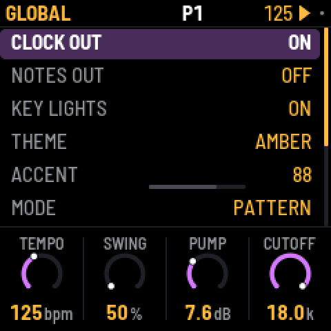
Press GLO for these settings:
| Setting | What it does |
|---|---|
| CLOCK OUT | Sends MIDI clock and start/stop messages. |
| NOTES OUT | Sends the patterns out as MIDI notes. |
| LIGHTS | ON: the key lights show the steps, and the unlit buttons glow dimly so they can be read. KEYS: the key lights only. OFF: neither. |
| KEY SOUND | STOPPED (the default): picking a drum or editing a 303 step is silent while the pattern plays, unless REC is on. ALWAYS: you always hear it. The 303 keyboard always plays either way. |
| THEME | The screen colour: green, amber, cyan, red or mono. |
| MODE | PATTERN, or SONG to play the song. |
| SAVE PROJECT | Saves everything. |
| AUTOSAVE | ON (the default): while the pattern is stopped, changes are saved by themselves once nothing has been touched for four seconds. OFF: only SAVE saves. |
| CLEAR PATTERN | Clears all five parts of the current pattern. |
| FACTORY RESET | Goes back to the factory sounds and empty patterns, with no song and no knob motion. Your saved project is kept until you save over it. |
| PERFORMANCE | Opens the performance page (below). |
| ABOUT X0X | Shows the version, how full the memory for patterns is (MEM), and the audio load. |
Press SAVE to save the sounds, all 32 patterns, the song, the knob motion, the tempo and the settings. A small dot at the top right of the screen means you have unsaved changes.
X0X packs the patterns, the song and the knob motion to fit them in the FM-1's memory; empty steps take almost no room, so a typical project uses a small part of it (GLO > ABOUT X0X shows how much, as MEM). If a project ever grows too big to fit, X0X says MEMORY FULL: NOT SAVED and keeps what was saved before; clearing patterns you don't need makes room. Projects saved by earlier versions load as they were, with their steps on 1–32 and their patterns on 1–16.
With AUTOSAVE on (the default), you'll rarely need to. Whenever the pattern is stopped and you haven't touched anything for four seconds, X0X saves your changes and says AUTOSAVED. It never saves while the pattern plays, because writing to the FM-1's memory briefly cuts the sound. Anything unsaved is lost when you switch off. With AUTOSAVE off, only SAVE saves.
Performance
GLO > PERFORMANCE shows how hard the FM-1 is working, updated every second: the audio load and its peak, any dropouts, and how much of the processor each part is using.
For a proper measurement, press SEL and choose RUN PERF TEST. X0X plays three patterns of its own for about 15 seconds, from a simple loop up to everything as busy as it gets, then puts your project back exactly as it was and shows the results. HOME or PLAY stops the test early.
X0X uses both of the FM-1's processor cores: the 808 and the break run on the second, so the 808's share on the performance page is the time the first core waits for them, and the whole load is lower: on one FM-1 the test's three patterns went from 43%, 83% and 115% on one core to 39%, 54% and 68%, and the busiest moment of the worst case from over the limit to 84%.
When the FM-1 gets close to its limit, X0X lightens the load by itself instead of dropping out: the 303s stop oversampling (bright, resonant notes get a touch grittier) and the 808's sounds end a little sooner as they fade. While this is happening, GUARD lights up in amber next to the audio load; it switches off again after three quiet seconds. The performance page counts how often it has kicked in (GUARD 3x).
If X0X drops out on one of your patterns, a photo of the test results and of the pattern is the most useful thing you can send.
KNOB 1 turns on some extra counters (STALLS). They're experimental: if the FM-1 acts up with them on, switch it off and on again.
16MIDI and USB audio
When connected over USB, the FM-1 shows up as a MIDI device called "X0X FM-1".
X0X takes MIDI from USB and from the FM-1's TRS MIDI IN jack, both the same way:
| Input | What it plays |
|---|---|
| Channel 10 | The 909, with General MIDI drum notes: 36 kick, 38 snare, 41, 45 and 50 toms, 37 rim, 39 clap, 42 closed hat, 46 open hat, 49 crash, 51 ride. |
| Channel 11 | The 808, with the same notes, plus 56 for the cowbell and 49 for the cymbal. |
| Channel 2 | 303A. Overlapping notes slide, and a velocity of 100 or more plays an accent. |
| Channel 3 | 303B, in the same way. |
| Channel 4 | Notes 36–43 play break slices 1–8. |
| Clock | X0X follows an incoming MIDI clock automatically, and returns to its own tempo half a second after the clock stops. Start, Stop and Continue start and stop the patterns. |
X0X can also send MIDI: clock and start/stop when CLOCK OUT is on, and the patterns as notes on the channels above when NOTES OUT is on.
USB audio
Over the same USB cable, the FM-1 also shows up on a computer as an audio input called "X0X FM-1": two channels at 44.1 kHz, with no driver to install. It carries what the headphones hear, after VOLUME, in stereo.
Record it in any audio app, or monitor it live through one. The FM-1 keeps its USB audio in step with the computer's clock, so live monitoring doesn't drift or drop out. The first moment after an app opens the input can click while the FM-1 settles.
17Troubleshooting
Update mode: hold OCT- and OCT+ together for five seconds. A countdown appears; let go before it ends to cancel.
Calibration: if a button or knob does the wrong thing, hold OCT- and OCT+ while you switch the FM-1 on. The screen then asks you to press each button and turn each knob in turn.
After a crash: X0X shows a red CRASH screen and restarts by itself a few seconds later. The next start shows RESTARTED AFTER A CRASH and an address (PC ...) for a moment. If you report the problem, include that address and what you were doing.
Safe mode: if X0X crashes twice in a row while starting, it starts in SAFE MODE instead. There's no sound, but USB works, so the web installer can reach it: reinstall X0X, or put the stock firmware back from the same page. Press PLAY to try starting X0X normally again. If even safe mode fails twice, the FM-1 drops into the chip's own update mode, and only the rescue below can reach it.
Stuck on the start screen after changing BRIGHTNESS: versions up to 0.9-beta had a brightness setting that could freeze the FM-1, and because the setting was saved, it stayed frozen at every start, even after reinstalling. Install 0.10-beta or later from the web installer: the setting is gone, the saved value is ignored, and the FM-1 starts normally.
Recovering an FM-1 that won't start
Since 0.5-beta, an FM-1 that keeps crashing starts in safe mode (above), where the web installer can fix it. Older versions instead dropped into the chip's own update mode after two crashes (0.2- beta did this: the X0X screen, a red X0X CRASH screen, then a blank screen). Neither the web installer nor M-VAVE's updater can see an FM-1 in that state, but a script can put M-VAVE's firmware back, on a Mac, with the USB cable you already have:
Open Terminal, paste this line and press Return:
bash -c "$(curl -fsSL https://raw.githubusercontent.com/charlesvestal/fm1-x0x/main/tools/fm1_rescue.sh)"- If a window asks to install the command line developer tools, click Install. When it has finished, paste the line again.
- If it asks for a password, type your Mac password (nothing shows as you type) and press Return.
- When it says it's waiting, plug the FM-1 in and switch it on. It crashes and goes blank, and the script catches it. It checks the chip, saves a backup of the FM-1's memory in the
fm1-rescuefolder in your home folder, and asks before it writes anything. - Type yes and press Return. Don't unplug anything until it says it's restarting the FM-1. The FM-1 then starts into its original firmware, and you can install X0X again from there.
The script downloads M-VAVE's FM-1 V15 firmware and JieLi's flash loader, and checks both against known fingerprints. It writes only the firmware area of the memory, never the bootloader or the FM-1's own settings, and checks everything it writes. Running it again is always safe. If it fails, copy everything in the Terminal window and open an issue. If the FM-1 never shows up at all, Felucca's FM-1-transporter (a small RP2040 board wired to the USB lines) can still reach it.
18Parameters
Drum settings range from 0 to 127. DIST, the distortion type, can be DIODE, CLIP, SAT, BFZ, PDIST, FOLD or CRUSH. PAN goes from L64 through C (the middle) to R63.
Each track's Level, Pan, Rev and Dly are on the mixer (909 MIX, 808 MIX); its Drive and Dist are in SEL's list; the rest are its sound pages.
| 909 track | Settings |
|---|---|
| BD | Tune, Attack, Decay, Level, Pitch depth, Pitch, Drive, Dist, Pan |
| SD | Tune, Tone, Snappy, Decay, Level, Drive, Dist, Rev, Dly, Pan |
| LT, MT, HT | Tune, Decay, Level, Attack, Drive, Dist, Rev, Dly, Pan |
| RS | Level, Tune, Drive, Dist, Rev, Dly, Pan |
| CP | Level, Tune, Tail, Drive, Dist, Rev, Dly, Pan |
| CH, OH | Decay, Level, Tune, Drive, Dist, Rev, Dly, Pan |
| CR, RD | Tune, Level, Decay, Drive, Dist, Rev, Dly, Pan |
| KIT | Accent (how much louder accented steps are) |
| 808 track | Settings |
|---|---|
| BD | Level, Tone, Decay, Tune, Attack, Drive, Dist, Pan |
| SD | Level, Tone, Snappy, Tune, Decay, Drive, Dist, Rev, Dly, Pan |
| LT, MT, HT | Level, Tune, Decay, Sound, Drive, Dist, Rev, Dly, Pan |
| RS | Level, Tune, Decay, Sound, Drive, Dist, Rev, Dly, Pan |
| CP | Level, Tune, Decay, Attack, Sound, Drive, Dist, Rev, Dly, Pan |
| CB, CH | Level, Tune, Decay, Drive, Dist, Rev, Dly, Pan |
| CY, OH | Level, Decay, Tune, Drive, Dist, Rev, Dly, Pan |
| KIT | Accent, Choke (off, closed cuts open, or both) |
| 303 setting | Range |
|---|---|
| Cutoff, Reso, EnvMod | 0–127 |
| Decay | 200–2000 ms |
| Accent | 0–127 |
| Wave | Saw or square |
| Tune | A from 400 to 480 Hz; the middle is 440 Hz |
| Volume | 0–127 |
| Drive, Drive type | Off, soft or RAT |
| Slide | 2–360 ms |
| Accent decay | 30–3000 ms |
| Break setting | Range |
|---|---|
| Complexity, Anchor, Roll, Fill | 0–100 |
| Retrig 2x, 3x, 4x, 8x | 0–100 |
| Phrase | Off, 2, 4, 8 or 16 bars |
| B chance | 0–100 |
| A length, B length | 1/4, 1/2, 1, 2, 4 or 8 bars |
| Level | 0–127 |
| Pitch | -12 to +12 semitones |
| Effect page | Settings |
|---|---|
| REVERB | Decay, Tone; in the list: low cut, return level |
| DELAY | Time (1/32, 1/16T, 1/16, 1/8T, 1/16., 1/8, 1/4T, 1/8., 1/4, 1/2T, 1/4., 1/2, 1/2.), Feedback, Tone, Tape (DIGI, then tape and its wear); in the list: low cut, return level, ping-pong |
| MASTER | Drive, Comp, Pump, Filter; in the list: the compressor's details, pump by, resonance, limiter, the drive's type, glue and volume |
The delay follows the tempo, including an external MIDI clock. A delay longer than two seconds (1/2. below 90 BPM, 1/2 below 60) plays at half that length, which still lands on the beat. With PING on, the echoes bounce from left to right, one delay time apart; delays longer than one second play in the middle instead.
19Credits
X0X is free software under the GNU General Public License, version 3. If you share the firmware, you must also share its source code.
- The platform (hardware layer, USB, update loader, installer and storage) is from Felucca by Leo Kuroshita, Hügelton Instruments.
- The 909 is from 9W9 by athousanddetails, which is based on ER-99 by Matthew Cieplak. Its hat and cymbal samples are ER-99's.
- The 808 is from 8W8 by athousanddetails.
- The 303 is from schwung-303, built on Open303 by Robin Schmidt (MIT licence), with extensions based on jc303 and dm-Rat.
- TB-3PO is from schwung-tb3po, which comes from the Phazerville Hemisphere Suite.
- The break generator is from BB Gen by mestela, used with permission.
- The fonts are Barlow Semi Condensed and Terminus (SIL Open Font License).
M-VAVE and FM-1 are trademarks of their owners, and TR-808, TR-909 and TB-303 are Roland trademarks. X0X is not connected with M-VAVE, Roland or Hügelton Instruments.